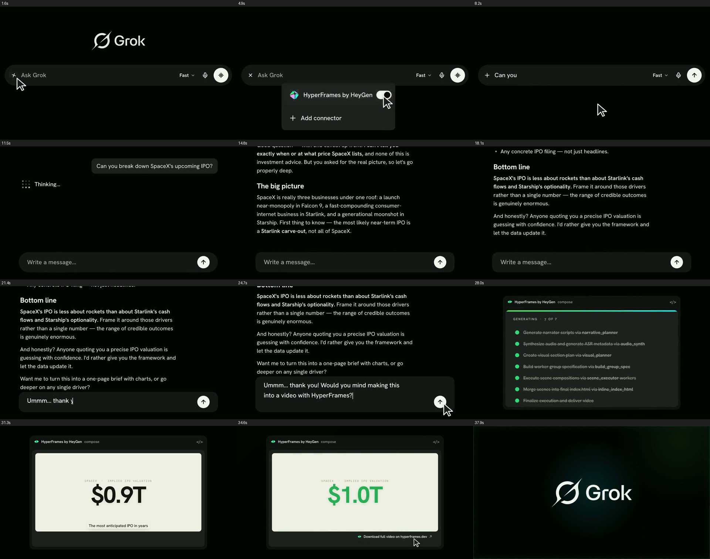

It is really three businesses under one roof. First thing to know — the most likely near-term IPO is a carve-out, not all of it.
It is really three businesses under one roof: a launch near-monopoly, a fast-compounding consumer business and a generational moonshot.
Bottom line. The IPO is less about rockets than about cash flow and optionality.
These are HTML approximations of the treatments in FRAME.md. Brand marks are generic placeholders.